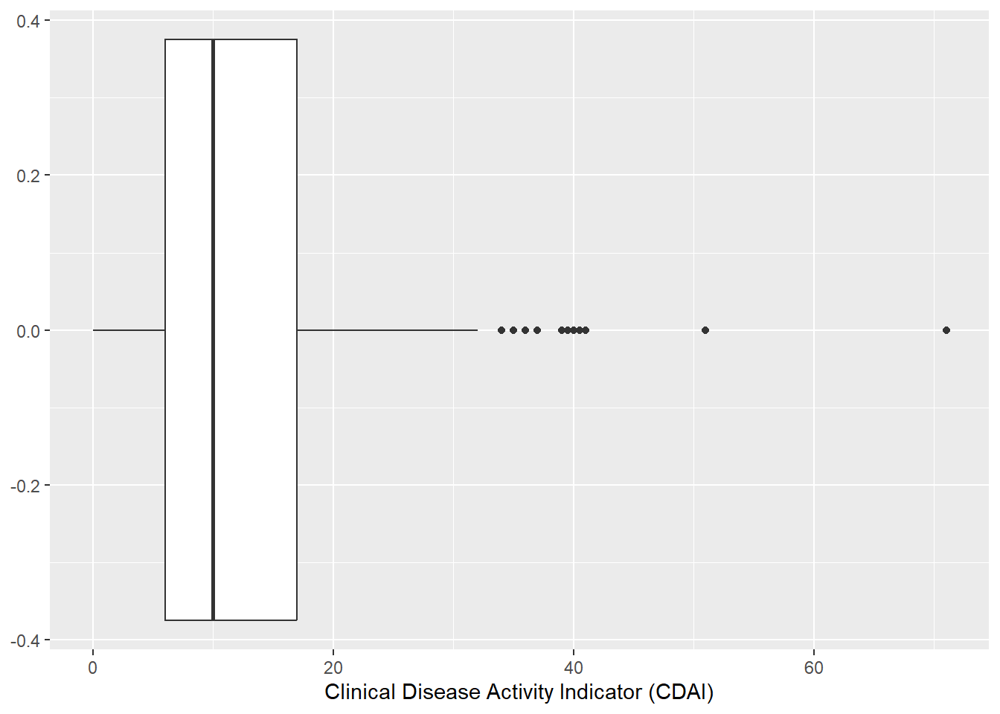

library(tidyverse) # The tidyverse package is a massive package that includes packages such as ggplot
library(janitor) # The janitor package has functions to help clean data, such as clean_names()Lab 2 Part 1 Solutions
Univariate plotting
Question 1
For this lab we will be exploring the Arthritis Treatment data. Visit the website, read the abstract, and browse the data dictionary to learn more about this data.
1a. Read and clean the data by running the two following code chunks.
arthritis_og <- read_csv("https://raw.githubusercontent.com/cosmos-uci-dshs/data/main/RheumArth_Tx_AgeComparisons.csv")Rows: 530 Columns: 14
── Column specification ────────────────────────────────────────────────────────
Delimiter: ","
dbl (14): ID, Age, AgeGp, Sex, Yrs_From_Dx, CDAI, CDAI_YN, DAS_28, DAS28_YN,...
ℹ Use `spec()` to retrieve the full column specification for this data.
ℹ Specify the column types or set `show_col_types = FALSE` to quiet this message.At this point we do not expect you to understand the code in the following chunk, we will learn data wrangling on a later date.
# clean_names() changes the variable names to fit tidyverse style guidelines
# factor() is re-coding the digits to meaningful labels
arthritis <- clean_names(arthritis_og) %>%
mutate(
sex = factor(
sex,
levels = c(0,1),
labels = c("Female", "Male")
),
cdai_yn = factor(
cdai_yn,
levels = c(1,2),
labels = c("No", "Yes")
),
das28_yn = factor(
das28_yn,
levels = c(1,2),
labels = c("No", "Yes")
),
steroids_gt_5 = factor(
steroids_gt_5,
levels = c(0,1),
labels = c("No", "Yes")
),
dmar_ds = factor(
dmar_ds,
levels = c(0,1),
labels = c("No", "Yes")
),
biologics = factor(
biologics,
levels = c(0,1),
labels = c("No", "Yes")
),
s_dmards = factor(
s_dmards,
levels = c(0,1),
labels = c("No", "Yes")
),
osteop_screen = factor(
osteop_screen,
levels = c(0,1),
labels = c("No", "Yes")
),
age_gp = factor(
age_gp,
levels = c(1,2),
labels = c("control", "elderly")
)
)1b. Use head(arthritis, n = 10) to view the first 10 rows of the data frame.
Note:
NAmeans missing data.- The assumed variable type is under the variable name. A factor is a categorical variable with the grouping specified (e.g. cdai_yn is either yes or no) while a double is a numerical variable (e.g. age).
1b. Solution
head(arthritis, n = 10)# A tibble: 10 × 14
id age age_gp sex yrs_from_dx cdai cdai_yn das_28 das28_yn
<dbl> <dbl> <fct> <fct> <dbl> <dbl> <fct> <dbl> <fct>
1 1 85 elderly Female 27 NA No NA No
2 2 86 elderly Female 27 23 Yes NA No
3 3 83 elderly Female 10 14.5 Yes NA No
4 4 83 elderly Female 9 NA No NA No
5 5 85 elderly Female NA NA No NA No
6 6 79 elderly Male NA NA No NA No
7 7 90 elderly Female 51 NA No NA No
8 8 90 elderly Female 11 40 Yes NA No
9 9 87 elderly Female 36 6 Yes NA No
10 10 82 elderly Female 4 NA No NA No
# ℹ 5 more variables: steroids_gt_5 <fct>, dmar_ds <fct>, biologics <fct>,
# s_dmards <fct>, osteop_screen <fct>1c. Use glimspe(arthritis) to see an overview of the data. How many observations and variables does this data have?
1c. Solution
There are 530 observations (rows) of 14 variables (columns).
Question 2
Now we are going to investigate using some numerical and graphical summaries of our data.
2a. Use summary(arthitis) to view quick summaries of each of the variables. What are some observations about the distribution of the data or missing data?
2a. Solution
summary(arthritis) id age age_gp sex yrs_from_dx
Min. : 1.0 Min. :42.00 control:459 Female:428 Min. : 1.0
1st Qu.:162.2 1st Qu.:54.00 elderly: 71 Male :102 1st Qu.: 3.0
Median :294.5 Median :59.00 Median : 7.0
Mean :290.6 Mean :60.69 Mean : 9.4
3rd Qu.:426.8 3rd Qu.:66.00 3rd Qu.:11.0
Max. :559.0 Max. :90.00 Max. :70.0
NA's :15
cdai cdai_yn das_28 das28_yn steroids_gt_5 dmar_ds
Min. : 0.0 No :324 Min. : 0.000 No :464 No :405 No :149
1st Qu.: 6.0 Yes:206 1st Qu.: 1.825 Yes: 66 Yes :124 Yes :380
Median :10.0 Median : 2.500 NA's: 1 NA's: 1
Mean :13.1 Mean : 2.923
3rd Qu.:17.0 3rd Qu.: 3.310
Max. :71.0 Max. :23.000
NA's :324 NA's :464
biologics s_dmards osteop_screen
No :332 No :502 No :216
Yes :197 Yes : 27 Yes :306
NA's: 1 NA's: 1 NA's: 8
There are 428 females and only 102 males in this data. People in this data range from 42 to 90+, with the average patient begin 60 years old. Our possible responses of interest, cdai and das_28, have a lot of missing data, especially considering there are only 530 people in this data set. Some treatments are more common than others.
2b. To better understand the ages distribution of the patients, it would be helpful to have a visual summary. Make a one variable plot that helps visualize the distribution of age. What do you observe from the plot?
2b. Solution
ggplot(arthritis, aes(x = age)) +
geom_histogram()`stat_bin()` using `bins = 30`. Pick better value with `binwidth`.There appear to be no one of age 71 - 74. The mode appears to be 55 with few people older than 80.
2c. Create a plot to visualize the counts of females and males in this study. Use add the layer labs(x = "Sex", y = "Count", title = "Study participants by sex") to specify informative titles. For all plots in this document make sure to manually specify the axis labels instead of using the defaults.
2c. Solution
A bar plot would be appropriate for this because it displays counts by category.
ggplot(arthritis, aes(x = sex)) +
geom_bar() +
labs(x = "Sex", y = "Count", title = "Study participants by sex")2d. Why would a histogram not be appropriate to visualize the counts of females and males in this study? What is a variable in this data that would be appropriate to visualize with a histogram?
2d. Solution
A histogram visualizes quantitative/numerical data, not qualitative/categorical data.
2e. Choose a plot to summarize the distribution of the clinical disease activity indicator. Note the median cdai as well as extreme outliers.
2e. Solution
I chose a boxplot because it visualizes summary statistics such as the 25% quantile, median / 50% quantile, and the 75% quantile, as well as outliers.
ggplot(arthritis, aes(x = cdai)) +
geom_boxplot() +
xlab("Clinical Disease Activity Indicator (CDAI)")Warning: Removed 324 rows containing non-finite outside the scale range
(`stat_boxplot()`).
The median cdai is 10 with some extreme cdai values of approximately 51 and 71.
Multivariate plotting
Question 3
Of interest was whether elderly patients were less likely to have disease activity measured and less likely to received aggressive treatment. This means we want to look at one variable grouped by another variable.
3a. Below we use group_by() and summarize() to obtain the counts of each age group as well as the counts and percents of people within each group that did not have clinical disease activity measured.
arthritis %>%
group_by(age_gp) %>%
summarize(
total_count = n(),
cdai_NA_count = sum(is.na(cdai)),
cdai_NA_per = 100 * cdai_NA_count / total_count
)# A tibble: 2 × 4
age_gp total_count cdai_NA_count cdai_NA_per
<fct> <int> <int> <dbl>
1 control 459 266 58.0
2 elderly 71 58 81.7Does there appear to be an equal amount of cdai missingness between the two groups? Did you use the counts or percentages to conclude this and why?
3a. Solution
The control and elderly age groups are not of equal size, so we should be comparing percentages not counts. The elderly age group has a much higher missingness rate for cdai than the control group.
3b. Let’s plot this missingness. We want to plot relative cdai_yn for each age_gp. Chose an appropriate way to visualize this.
3b. Solution
I chose to plot the cdai missingness variable on a bar plot, color coded by age group.
ggplot(arthritis, aes(x = age_gp, fill = cdai_yn)) +
geom_bar(position = "fill") +
xlab("Age group") +
ylab("Percent") 
Question 4
Now we want to investigate the relationship between years since diagnosis and clinical disease activity indicator.
4a. Create a plot to visualize the relationship between these two variables. What information does your plot provide you with?
4a. Solution
ggplot(arthritis, aes(x = cdai, y = yrs_from_dx)) +
geom_point()Warning: Removed 325 rows containing missing values or values outside the scale range
(`geom_point()`).There does not appear to be any relationship between clinical disease activity indicator and years since diagnosis. It generally appears to be random.
4b. Now we want to learn if the relationship differs for patients patient that were and were not on steroids at more than 5 mg daily. Create a plot to aid in this investigation and state your findings.
4b. Solution
ggplot(
arthritis,
aes(x = cdai, y = yrs_from_dx, color = steroids_gt_5)
) +
geom_point() Warning: Removed 325 rows containing missing values or values outside the scale range
(`geom_point()`).No evidence of a relationship is revealed by this plot.
Question 5
Visualizing data is an art and there is not necessarily one perfect way. Compare your answers with you neighbors and debate your plotting choices.
Extra challenge: Spend some time looking up plotting options and making your plots more visually appealing (e.g. changing the theme, colors, font size, legend position, etc). Look up how to change your legend title and apply it to any of your plots with legends.
Once you have finished this lab you should save and commit your changes to Git, then pull and push to GitHub.